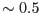

arfgen simply constructs the appropriate quantities from the CAL, in the form of vectors of discrete energy-dependent elements, and combines these data multiplicatively to form the ancilliary response. The energy grid used to construct these vectors is taken either from the CAL, or from the input RMF dataset (see section 5.6).
Note for MOS instruments, a factor  of photons are redistributed away from the detector by the RGA. This is already taken into account by the CAL in the call to CAL_effectiveArea.
The user can enable or disable the effective area, filter transmission, QE or grating attenuation by setting the relevant parameter (eg modeleffarea) to true or false respectively.
Note that the values in the effective area curve are dependent on the source position with respect to the focal plane. See section 5.4.